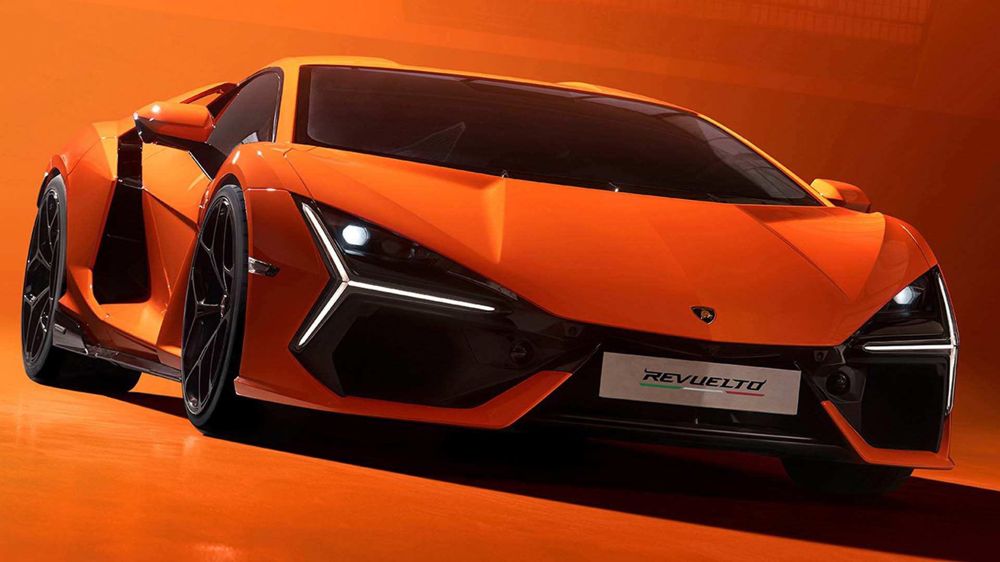

A Lenda do Touro
A jornada de Ferruccio Lamborghini: de tratores a supercarros.
O Início de um Sonho
A Automobili Lamborghini foi fundada em 1963 por Ferruccio Lamborghini, um industrial italiano de sucesso que fez fortuna fabricando tratores. Apaixonado por carros esportivos, Ferruccio possuía vários modelos de luxo, incluindo Ferraris. A lenda conta que, insatisfeito com a embreagem de sua Ferrari e com a resposta que recebeu de Enzo Ferrari, ele decidiu que poderia construir um carro melhor.
Com essa determinação, ele fundou sua própria fábrica em Sant’Agata Bolognese, com o objetivo claro de criar o gran turismo perfeito: um carro veloz, luxuoso e confiável para o uso diário.
A Revolução Miura
O primeiro modelo foi o 350 GT, lançado em 1964, mas foi com o Miura, em 1966, que a marca ganhou reconhecimento mundial. O Miura foi revolucionário ao adotar um motor V12 central-traseiro em um carro de rua, uma configuração até então reservada a carros de corrida. Seu design deslumbrante, assinado por Marcello Gandini no estúdio Bertone, e seu desempenho fenomenal o transformaram no primeiro supercarro do mundo e em um ícone instantâneo.
Ícones e Desafios
A década de 70 viu o lançamento de outro ícone: o Countach. Com seu visual radical e as famosas portas "tesoura", ele definiu a imagem da Lamborghini por décadas. No entanto, os anos 70 e 80 foram marcados por crises econômicas e instabilidade financeira. A marca passou por várias mãos, incluindo a Chrysler nos anos 80, e continuou a lançar carros marcantes como o Diablo nos anos 90, apesar da gestão turbulenta.
A Era Moderna e a Eletrificação
Em 1998, a Lamborghini foi comprada pela Audi (Grupo Volkswagen), iniciando uma era de estabilidade, modernização e crescimento. Sob o controle alemão, vieram modelos de imenso sucesso como o Murciélago (2001) e o Gallardo (2003). Mais recentemente, o Aventador, o Huracán e o SUV Urus solidificaram a marca no topo do mercado de luxo. A partir de 2023, com o lançamento do Revuelto, o primeiro híbrido plug-in V12, a Lamborghini iniciou sua transição para um futuro eletrificado, prometendo manter o DNA e a alma de um verdadeiro touro selvagem.